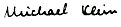

Nascom Journal |
4/80 |
Immer mehr wird die Hobby Elektronik Ausstellung auf dem Stuttgarter Killesberg zu einem Prüfstein für zukunftsträchtige Produkte. Immer mehr Computer, Mikrocomputerlehrsysteme und auch Rechner für den kommerziellen und "halbkcommerziellen" Einsatz sind auf dieser Ausstellung zu sehen.
An Nascom – Neuheiten werden wir die 5-Zoll Floppy-Disk vorstellen, die schon bei zahlreichen Anwendern im Einsatz ist und sich großer Beliebtheit erfreut. Außerdem ist die neue 48k Speicherkarte für Nascom 1 und Nascom 2 zu sehen, die man mit drei anderen 48k Speicherkarten im sog. "Page Mode" zu einem Speicher von insgesamt 192k Byte zusammenschalten kann. Auch die hochauflösende Graphik mit 256x256 Bildpunkten wird erstmalig am Nascom vorgestellt. Diese Karte ist inzwischen auch lieferbar. Außerdem ist die "kleine Graphik", die es möglich macht, den Nascom 2 – Zeichensatz auf dem Nascom 1 zu betreiben, auf der Messe zu sehen. Dabei sind auch EPROM-Programmiergerät, I/O-Erweiterungskarte und jede Menge Software (Assembler etc.).
Sie finden uns nicht am Stand von N.A.S. Wir haben einen eigenen Stand, den Sie nicht übersehen können. In der Nähe des „Action Center“ finden Sie unseren Stand 6008.
Ansonsten sind auch noch andere Computer zu sehen. Da ist zunächst einmal der Eurocom 1 und der Eurocom 2. Beide mit z.T. noch nicht übertroffenem Preis/Leistungsverhältnis. Der Eurocom 2 für 1480.– + MWSt verfügt bereits über eine Farbgraphik von ca. 130 000 Bildpunkten ! Er hat einen 4k Byte Monitor, 48k Speicher (kein Druckfehler), 40 Ein/Ausgabeleitungen, eine Serienschnittstelle RS 232 und ein Kansas City Interface. Alles auf einer Doppeleuropakarte ! Das Salz in der Suppe: Ein 6809 – Prozessor bildet das Herz des Eurocom 2. Er gehört zu den leistungsfähigsten 8 Bit Mikroprozessoren überhaupt. Das macht die interne 16 Bit – Struktur aus ! Der Befehlssatz läßt sich durchaus mit dem eines 16 Bit Prozessors vergleichen und hat nochmal ca. 400 Befehle mehr als der Z 80. Es gibt bereits ein sehr schnelles BASIC, einen Assembler, Graphik-Software und zahlreiche Anwenderprogramme. Besonders interessant ist die nächste Erweiterung: Ein Floppy-Disk-Interface und ein IEC-Interface wurden ebenfalls auf einer Doppeleuropakarte untergebracht. Preis 980.– !!!
Als weiteres Gerät wird der APPLE II plus vorgestellt. Dieses System ist so gut bekannt, daß eine weitere Beschreibung wohl entfallen kann. Für den APPLE stellen wir eine Reihe kommerzieller Programme vor, u.a. auch Programme, die wir selbst in der betrieblichen Praxis einsetzen. Es dürfte sich für alle Gewerbetreibende und Freiberufler unter unseren Lesern lohnen, dieses Angebot näher unter die Lupe zu nehmen.
Der PSI 80 von Kontron ist ein Gerät für den echt kommerziellen Einsatz. Es lohnt sich diese Investition nicht für alle Betriebe.
Letzter aus dem Hobby-Bereich ist der D A I – Computer, den wir ebenfalls vorstellen. Er verfügt über eine äußerst komfortable BASIC-Implementation, hat eine ganz tolle Farbgraphik (255x355 Punkte; 16 Farben) und Musik- und Sprachgenerator.
Kommen Sie zur Hobby Elektronik 80 ! Es lohnt sich, alles in Ruhe anzuschauen.
Ich freue mich auf Ihren Besuch
Ihr

| Seite 3 von 20 |
|---|